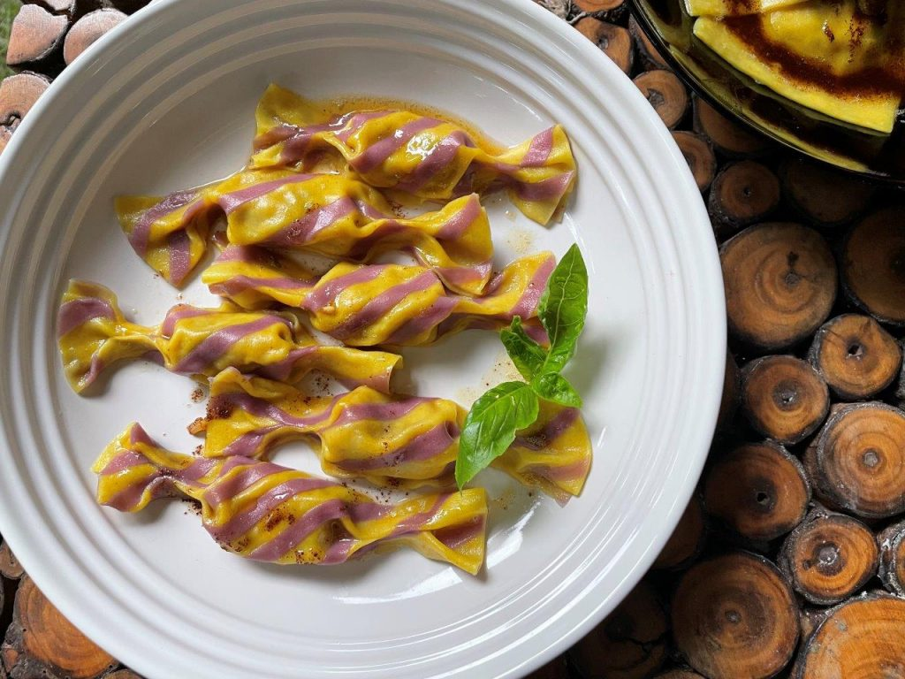
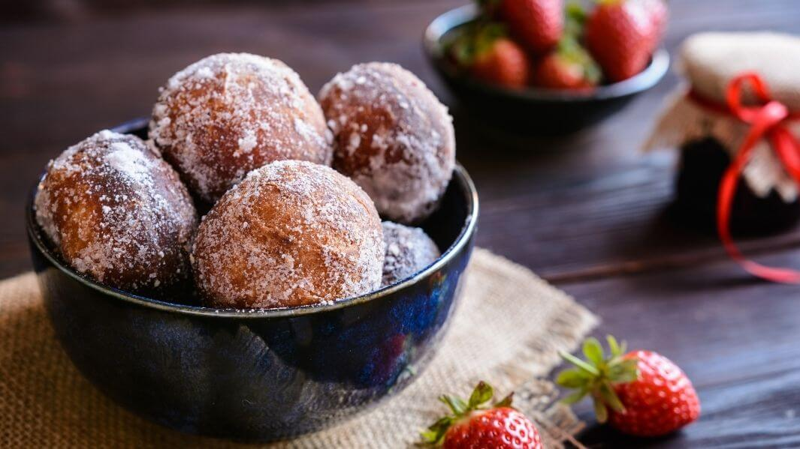

Pizza
picture by zuzi99 Pixabay License
Pizza is an Italian meal that consists of a generally circular, flat foundation of leavened wheat-based dough topped with tomatoes, pineapples, mozzarella, and often other ingredients before being cooked at a high temperature, traditionally in a wood-fired oven. A pizzetta is another name for a little pizza.
picture by Aarthi Pixabay License
Caramelle
Caramelle Pasta is a tasty candy-shaped pasta. This pasta is both thrilling to prepare and delicious to eat. It's a great activity to do with your kids and adds a particular touch to any event. Caramelle means "candies" in Italian, however it relates to the form of the pasta rather than a sweet flavor. Filled pasta twisted at the end to resemble candy.
picture by Alleko Pixabay License
Zeppola
A zeppola is an Italian pastry made up of a deep-fried dough ball that varies in size but is normally around 4 inches in diameter. This fritter is typically dusted with powdered sugar and filled with custard, jelly, cannoli-style pastry cream, or a butter-and-honey mixture.